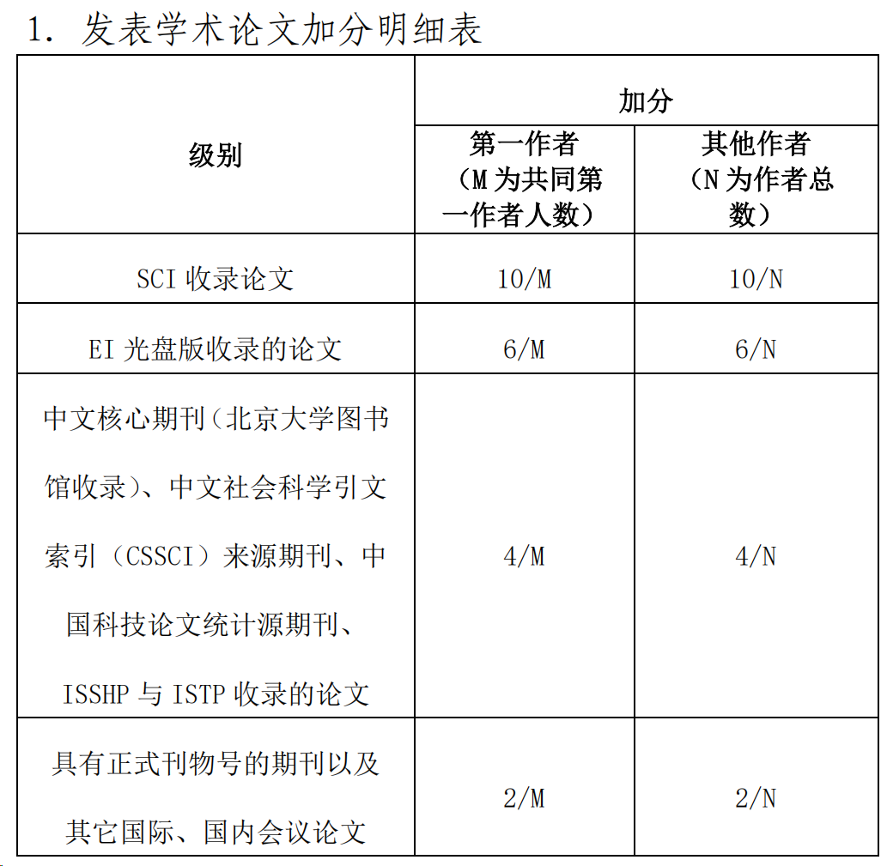
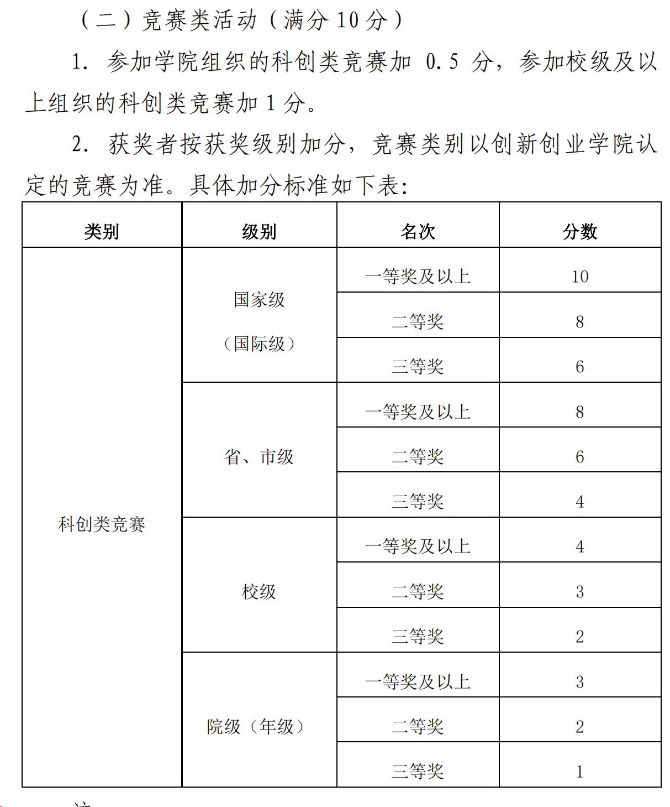
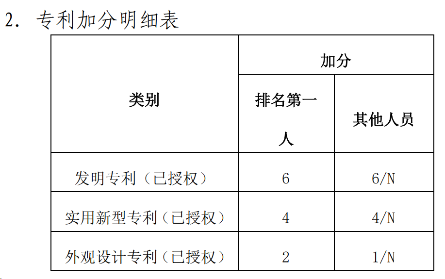

KYDW 与慧医智心可以保障积极参与的成员获得帮助和指导，并在包括但不限于保研、升学的硬指标和软指标方面尽力提供支持。
为了避免还未接触过这些内容的同学受到外界（小红书、B 站、知乎、保研机构等）混乱信息的干扰，我们以本院学生过往的经验和升学情况为参照，撰写了本文件，希望让同学们对成果有一个可靠、准确的判断，避免“小马过河”的问题。
外界不同层级高校的学生、升学辅导机构，往往基于自身情况对各项内容进行描述。同学们可能因此产生与自身水平和背景不符的理解，进而做出混乱的决策。
论文
论文主要分为期刊论文和会议论文两大类：
- 期刊论文：经过同行评审、修改后正式发表。医学、生物医学工程和多数自然科学方向，通常以期刊论文为主要成果形式。
- 会议论文：经评审后录用，并在会议中发表或展示。在计算机、人工智能及新兴交叉学科领域，高水平会议具有很高的学术认可度。
对于医工方向，期刊论文和会议论文都可以是有含金量的学术成果。但它们内部又有各种等级划分，名称多、标准杂，刚接触时很容易看晕。这里做一个适合我院本科生的简化介绍。
期刊论文：SCI、EI 与分区
我们常见的期刊论文主要分为 SCI 期刊论文和 EI 期刊论文。其中，SCI 是全球范围内最高等级的期刊数据库，EI 次之。再往下，还有许多英文和中文数据库。如果不在 SCI 或 EI 数据库内，基本可以认为是没有什么含金量的期刊。近三年内新出现的期刊除外，因为获取 SCI 索引需要三年时间。
据 KYDW 近七年掌握的信息，每届本科生中，约有 5%—10% 能在大四开始前发表 EI 期刊第一作者论文，约有 0%—3% 能发表 SCI 期刊第一作者论文。
但也需要注意，这些成果中含有相当数量的学术不端行为，例如购买论文或人情论文，不能看到“本科生发论文”就默认都是独立完成的科研成果。
SCI 期刊内部又有两套主流分区：
| 分区体系 | 分区方式 |
|---|---|
| JCR 分区 | 分为一区至四区，每 25% 为一个档位。 |
| 新锐分区（原中科院分区） | 同样分为一区至四区，分界大致为前 5%、20%、50% 和 100%。 |
可以看出，JCR 分区相对宽松，一区中也可能包含大量水刊。新锐分区的划分更严格，但因为由中国机构制定，也包含一定的暗箱操作，例如通过调整评价标准提高中国期刊的分区、压低国际高水平期刊的分区等。
所以，这两套分区都只能作为不了解某个领域时的相对参照，和看 QS 世界大学排名差不多。真正了解一个领域以后，还是要知道同行认可哪些期刊，不能只盯着一个分区数字。
总体来说，JCR 一区论文的影响力已经很高，在本科生保研、申请中，可能起到颠覆性的作用。
自我院 2019 年项目更迭、由中荷项目转为医工学院以来，官方有记录的本科生第一作者 SCI JCR 一区论文共 5 篇，其中 2 篇为新锐一区期刊论文。以下仅列第一作者或共同第一作者。
表中分区按 2026 年 9 月查询结果填写：JCR 采用 JIF 分区，新锐采用 2026 年 3 月大类分区；成果年份及原列影响因子保留。当前分区与论文录用时的分区可能不同。
2026 年
| 作者 | 期刊 | 影响因子 | 分区 |
|---|---|---|---|
| 朱鸿杰（23级）、周华苑（24级） | Journal of Medical Systems | 8.8 | JCR一区，新锐三区 |
| 汤昊天（23级）、崔涵禹（23级） | Expert Systems with Applications | 9.4 | JCR新锐双一区 TOP |
| 吴熙东（22级）、汤昊天（23级） | Biomedical Signal Processing and Control | 5.7 | JCR二区，新锐二区 |
2025 年
| 作者 | 期刊 | 影响因子 | 分区 |
|---|---|---|---|
| 吴熙东（22级）、颜铭锞（21级） | Computer Methods and Programs in Biomedicine | 6.4 | JCR一区，新锐二区 |
| 刘涵瑜（21级） | Medical Image Analysis | 14.0 | JCR新锐双一区 TOP |
此前年份均无发表。
分区查询来源
Journal of Medical Systems（JCR） · Expert Systems with Applications（JCR） · Biomedical Signal Processing and Control（JCR） · Computer Methods and Programs in Biomedicine（JCR） · Medical Image Analysis（JCR）
会议论文：EI 收录与 CCF 分级
会议论文主要看 EI 收录，但在此之外，还有中国计算机学会的 CCF 分级，分为 A、B、C 三类。
不在 CCF 分级内的会议，可以认为与 EI 期刊的影响力相近——也就是没有什么影响力。CCF 对期刊也有分级，但这套分级在期刊评价中的影响较低，所以前面没有展开。
会议中，基本可以认为 A 类和部分 B 类会议的影响力极高，通常不低于普通的新锐一区期刊。在本科生保研、申请中，同样可能起到颠覆性的作用。
目前有记录的、我院本科生在大四开始前发表的 CCF 会议论文共 4 篇，其中 1 篇为 CCF A 类会议论文。以下仅列第一作者或共同第一作者：
| 作者 | 会议 | CCF 分级 |
|---|---|---|
| 苗正洋（23级）、吴熙东（22级） | ICASSP 2026 | B 类 |
| 万和欣（24级）、刘怡航（24级） | BMVC 2026 | C 类 |
| 据传为一位非 KYDW 成员的智医同学（23级） | IJCAI 2026 | B 类 |
| 刘涵瑜（21级）、赵伯阳（21级） | IJCAI 2024 | A 类 |
注：IJCAI 在 2026 年被 CCF 从 A 类调整为 B 类。
为什么只统计到大四开始前
大四期间，很多同学已经完成保研或申请，这时发表的论文已经失去了本轮升学中的作用。有些同学也已经开始跟随未来院校的导师做科研，成果归属通常不再算在医工学院内，我们也很难继续统计到完整信息。
如果统计到毕业前，信息就会极度不完整，甚至出现错误。KYDW 内部也有很多同学在大四期间发表论文，这些成果我们能拿到有效信息；但如果只把这些列出来，又会形成对非 KYDW 同学不公平的比较。因此，这里统一统计到大四开始前。
另外，部分期刊和会议的正式发表时间远晚于接收时间，而接收通知已经可以作为评奖学金和申请的有效证明。所以，这里以接收时间作为收录时间。
论文对升学和综测的作用
高水平论文可以给本科生的保研、申请路线带来很大的加成。即便只是 EI 期刊或会议论文，也可能让处于保研名额末尾的同学进入复旦、上交、浙大等华五级高校读研——这里暂时不讨论具体课题组的实力。
除了对个人能力和科研能力的证明，学院本身也提供综测加分。

但我院的相关评分规则年久失修，没有进一步区分 SCI 期刊的分区，也没有区分 EI 会议中的 CCF 等级。我们曾向学院提过细化科研成果综测评分的意见，但当时负责本科生综测的辅导员，是一位刚读研的硕士生，对科研一窍不通，完全听不懂我们在说什么！（26 级综测文件据说会增加高水平论文的单独评定，会影响学生等级评定指标（新指标），总体利好高水平的 SCI 和 CCF 论文，新同学可以期待一下。）
感兴趣的同学可以看看计算机学院等大院的论文加分政策。计算机学院的综测占比为 5%，学术论文和高含金量计算机竞赛单列加分。一篇一区论文或 A 类会议论文的加分，基本就能顶三年综测总分的几倍。
虽然我们加不到这个分数，但这足以说明，高水平学术单位有多重视论文成果。
竞赛
竞赛星级与比赛层级
东北大学将正规竞赛划分为 四至七星级，其中医工相关竞赛均在五星级中。
同一项竞赛还可能分多场进行。例如，与我们专业最相关的生物医学工程创新设计大赛，就有校赛、国赛预赛和国赛决赛三个层级。其他比赛还可能设有省赛、市赛、东北三省级赛事等。
对我院学生来说，只有国家级竞赛奖项，对升学有一定帮助。
星级不等于含金量
需要特别注意：竞赛星级不等于竞赛含金量。
这里面的关系比较复杂，不方便在书面上展开。大家可以先记住：四星级中的数学竞赛、五星级中的生物医学工程创新设计大赛和美国大学生数学建模竞赛（不是六星级里的中国数模，那个没啥用），对我们的作用远大于其他星级中的所有比赛。
CCPC 和 ICPC 是例外。这两项属于计算机算法专业竞赛，含金量极高，而且全球通用。但我院从未有人参与，因此这里暂不纳入比较。
七星级竞赛又比较特殊，属于国家层面鼓励和认可的竞赛。学校、各类机构和老师，可能都会积极推荐大家参加。但是，对于没有家庭背景的学生，完全、完全、完全没用。如果你适合参加，那么让你参赛的人，大概率就是你的家人。
大家千万不要一时热血，把大量时间耗在这上面。具体情况可以线下咨询 KYDW 内部成员。
是否值得投入时间
对于我院学生，方向相关的国家级竞赛，获奖难度相对较低。但这些比赛普遍举办年限较短，含金量也相对有限。
所以，除了需要满足综测硬性要求，或准备通过竞赛保研的同学，不建议盲目把大量时间投入这一方向。
竞赛加分可以参考最新的竞赛表单。医工学院内部主要按照国家级、省级和校级计算，并不按竞赛星级计算。

KYDW 的竞赛成果
2022—2024 年，KYDW 获得的国家级竞赛奖项，占到了全院总数的 90%。后来，我们逐渐意识到竞赛奖项在升学中的局限性，同时出于对保研同学的信息保护考虑，只保留了竞赛资源和代码的传承，不再主动统计获奖信息。
可以透露的是，从 2025 年开始，东北大学在生物医学工程创新设计大赛中的国家级一等奖名额，由 1 个增加到 3 个。同样从 2025 年开始，KYDW 每年都能拿到其中 2 个国家级一等奖名额。具体成果可以查看官网的成员动向。
此外，在另外两项认可度较高的非专业类竞赛——国家级数学竞赛和数模美赛中，近年最高奖项的获奖者，也都在 KYDW 和慧医智心团队内部。
并非因为我们获奖了，才专门挑这几项来说；而是我们专业能打的比赛，我们都拿过最高奖项。
大创
大创是什么
大创通常指大学生创新创业训练计划。我们这里主要讨论东北大学的大学生创新训练计划项目，也就是本科生在老师指导下，组队完成一项研究或开发工作。之所以单列这个活动，是因为它对本科生来说尤为重要，基本是产出论文、竞赛成果、专利和软著的最重要机会之一。具体的规章制度可以参考东大创新网发布的项目管理方案。
我们这里提到的，都是方案中没有明面上提及，但又非常重要的点。
1. 人员选择
大创理论上的开展时间为当年 6 月上旬到次年 4 月中旬，但由于东大的特殊制度，立项时间被提前到了前一年的 10 月。这是一个可以很大程度上提高成果产出率，但又对大一同学不公平的举措。因为很多没有什么准备的大一同学，刚军训完就会被同样没有什么准备的学长学姐忽悠到大创组里当苦力，往往做着填表、跑腿的苦活，却拿不到什么实际成果和学习机会；想要退出，又担心人情关系和未来可能的机会。
所以，这里劝告各位大一同学谨慎选择要加入的大创项目。不同组的成果差异巨大，不必因为一时心切就盲目加入，大创在 6 月正式立项（校内又叫中期审查）前都允许加入。也劝告各位大二、大三同学在立项前多做了解和准备，避免盲目挑选低年级同学或熟人组队，导致项目烂尾。
2. 方向选择
在立项阶段，除了选人以外，最重要的就是大创的方向选择。这里指的不是学科方向，而是大创本身的方向。
从目前已知的公开信息来看，大创分为创新类和创业类。我们基本都参加创新类（创业类不对外公布信息，情况较为复杂，可参照七星级竞赛）。创新类又分为学术创新、技术创新、竞赛储备、成果孵化、科普等类别。这是东大自己设定的类别，不同类别有单独的评价标准。在对外宣传上，几类的含金量一样，但实际上天差地别。
以医工学院本科生升学为目标，这里简单拆解一下几类方向的成果目标：
| 类别 | 成果目标 |
|---|---|
| 学术创新 | 学术论文 |
| 技术创新 | 软件著作权 |
| 竞赛储备 | 竞赛奖项 |
| 成果孵化 | 企业合同 |
| 科普 | 知识宣传（如公众号关注人数、阅读量） |
不言而喻，在不考虑个人能力和项目水平的情况下，单纯评估几个类别的发展走向，那么就是：学术创新类 ≥ 技术创新类 > 竞赛储备类 > 成果孵化类 ≥ 科普类。
3. 导师选择
导师的方向各不相同。选择一位研究方向自己感兴趣、又有前途的导师，有时要比大创方向更重要。因为加入某位导师的大创项目，往往意味着加入他的课题组，你也会因此参与深入的科研工作。到时候，大创可能只是一个媒介，具体获得的指导和项目机会更加重要。
在升学面试和简历中，科研经历和成果起到关键性作用，而大创国优、竞赛国金只能证明有一定的科研潜力。大创只是科研的起步平台之一，一定不要本末倒置。
一般情况下，推荐大家选择学院内往年有优秀成果、近年有较多学术发表的副教授和讲师：动力足，愿意亲力亲为，而非找研究生带学生。研究生的随机性太强，有些还不如高年级本科生。
4. 大创奖项
大创在中期会评定项目等级（国家级、省级和校级），结项时会评定结题等级（优秀、良好和合格）。想要竞赛保研的同学，可以争取国家级优秀，以获得竞赛保研的竞争资格。除此之外，这些奖项的意义并不是很大。就像前面导师选择中所说，主要是借此获得科研的机会，而非获奖本身。
我（刘涵瑜）个人在第十七批大创项目的立项、中期和结项评审中，都获得了专业第一名的成绩，最终也是国家级优秀。能切实感受到，这个荣誉的价值属实有限，相比一段深入的科研经历来说不值一提。其他获得国优的同学也有一样的经历：面试或者和导师交流时，这个奖项和常规竞赛奖项、班委或学生组织工作一样，无人在意，而科研经历和成果则更受关注。
更重要的是，我借此机会发表了第一作者 SCI 期刊论文和 CCF A 类会议论文，深入参与了课题组科研，获得了与高水平科研学者讨论交流的机会，以及参与国家自然科学基金课题申请的经历。
软著与专利
软件著作权和专利有什么区别
软件著作权通常简称“软著”。我们常说的“申请软著”，一般指办理计算机软件著作权登记。
拿一个医学图像分析软件举例：自己开发的程序可以考虑办理软著登记；如果其中还有具备新颖性、创造性和实用性的技术方案，可以进一步研究是否适合申请发明专利。同一个项目可以涉及两者，但登记了软件，不代表其中的算法已经获得专利保护。
这听起来很厉害，但实际并非如此。用通俗的话来讲，花一小时用 Codex 就可以搓出一个软件，所以软著一般只是作为论文的顺带产出。对我们的加成也只是多学了一些技能，所以搞过一次就够了，多做无益。（可以跟研究生导师说自己会写软著，他要找牛马干活的时候就会找你了。）
除此之外，专利和软著额外的作用，就是可以水综测分数。一个发明专利或软著就可以拿到相当高的加分，具体分值每年都变，可以查看当年的综测文件。而申请这些成果的最大门槛，就是说服老师花 3,000 块经费，拿你的 vibe coding 玩具去申请专利、拿到受理通知书。
